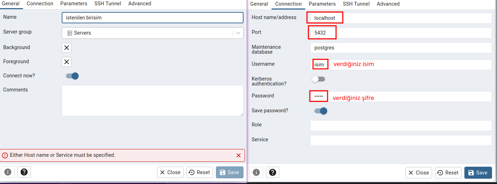
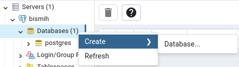
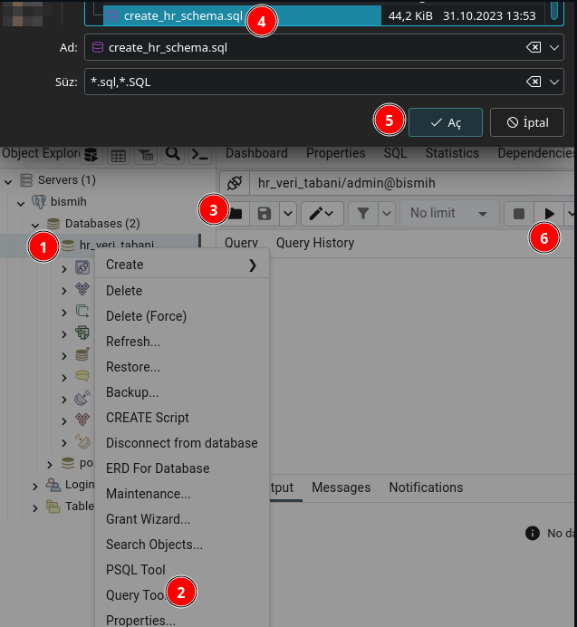
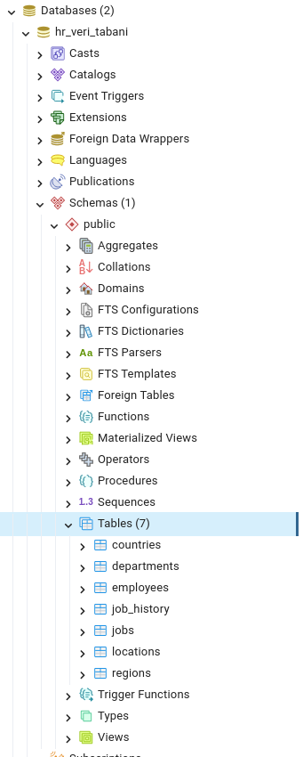

Selamunaleyküm dostlar. Bugün Postgre kurulumunu yapıp pgAdmin4 ile nasıl hr şemasını ekleyip sorgulayabilieceğimizi göstermeye çalışacağım inşAllah
İlk öncelikle postgre sqli kuruyoruz
sudo apt install pgadmin4 postgresql
Sonrasında psql içine girip bir kullancı oluşturuyoruz. Burada isim ve şifreyi değişitirebilirisiniz
sudo su - postgres
psql
#bu kısım postgres=# içinde olacak
create user isim with superuser password 'sifre';
Sonrasında pgAdmin4'ü açıp resimdeki ayarları yapmamız lazım
Öncelikle veri tabanını burdan indirelim
Simdi veri tabanına bağlanabildiğimize göre yeni bir tane veri tabanı oluşturalım
herhangi biri isim verip oluşturalım. sonrasında oluşan veri tabanına sağ tık yapıp alt kısımdaki query tool kısmana gelip veri tabanımızı ekliyoruz sonrasında çalıştırma butonuna basıyoruz veya f5
eğer bir sıkınt çıkmadısya tablolarımız gelmiş olması lazım
sonrasında query kısmındaki bölümü silip test için karışık bir sorgu atalım
-- Kendi birimi ortalaması maaş alan kişileri bulunuz.
SELECT e.*, ortalama
FROM (SELECT department_id, AVG(salary) ortalama
FROM employees
GROUP BY department_id) dept_ort,
employees e
WHERE e.department_id=dept_ort.department_id
AND e.salary < dept_ort.ortalama